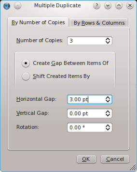
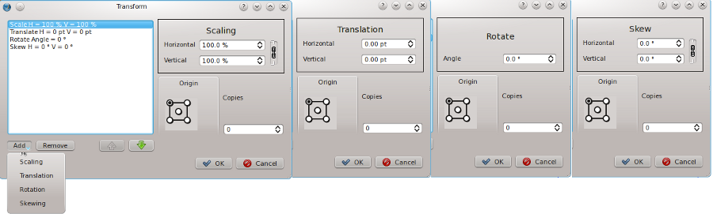
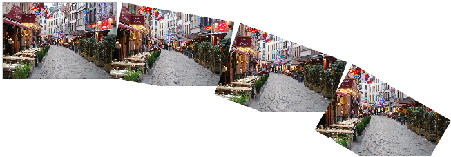
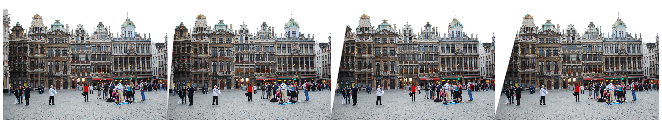
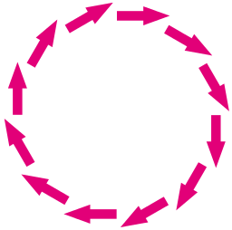

Multiple Duplicate and Transform
Duplicating items on a page with precision is an important feature of every layout or drawing application. While it‘s always possible to use a simple copy and paste operation to duplicate an object, letting the computer calculate the position of duplicates can make life easier and save a lot of time. Scribus offers two powerful and versatile tools for the creation and the placement of copied items: Multiple Duplicate and Transform. In some ways, these two feature are quite similar, but each allows for slightly different approaches to making multiple copies of some object on your page.
Multiple Duplicate
Let‘s just mention briefly that Duplicate (Item > Duplicate or Ctrl+D) is a simple operation, making a copy of your selected object, with a displacement of 10 points in each of the X and Y directions. If you wish to specify another form of placement automatically, then use Multiple Duplicate and make just one copy.
| Prior to 1.3.5, Multiple Duplicate (Item > Multiple Duplicate) was a simple process of making one or more copies of an object with successive X and Y offsets from one copy to the next. It still can work that way, but first we‘ll have a look at what may be a more useful method – creating rows and columns. This is not creating a table, but a simple repetitive array of your selected object.
To the right, we see the “By Rows and Columns” tab. The settings you see in the dialog will result in the montage you see below. One
feature to notice is that “Horizontal Gap” refers to these vertical spaces between columns.
|

|
|  |
| Now to the right we see the other tab, “By Number of Copies”. This works similar to how Multiple Duplicate did in previous versions, but even here we see the option for creating a gap between copies rather than just shifting by some absolute amount, which does still remain an option. The settings here will produce one of the rows you see in the above example. Notice that 3 copies in addition to the original produces 4 columns.
You may also notice the spinbox labeled Rotation in this dialog, and thus you can also add some rotation to each successive object. In the example below, 3 copies were made, with an 8-point gap and 10° rotation from one to the next.
The dotted line you see is a horizontal guide placed to show that the axis of rotation is around the basepoint, in this case the upper left
corner of the frame. Also see how the content rotates with the frame – below we will see how Transform is quite different in this regard.
|
 |
 |
Transform
In its simplest usage, Transform (Item > Transform) can modify an object in one or more of the following ways:
- Scaling
- Translation
- Rotation
- Skewing
To be clear, “Translation” refers to moving an object right/left and up/down on the document. Each of these operations is available somewhere else in Scribus, so using one of these to change an object is hardly efficient. The value to the Transform feature rather rests with the fact that you can perform these operations serially, and that you can use it to serially create copies of the object, performing the modifications
serially each time.
Here is a montage of the various options when you select these operations:

The possible combinations of these operations are quite endless, so experimentation is needed to get a sense of different effects in various
combinations. Let‘s look at a simple example, in which we translate an image, then rotate each copy 10°, conceptually similar to our multiple
duplicate experiment above. But look at the very different result:

The process started out similarly, with lateral translation, then rotation, but then the next translation is along the rotated horizontal axis of frame 2, then the process repeated again. Also, note that the image itself is not rotated. You will find that a similar phenomenon occurs with text frame, with the lines of text remaining aligned horizontally with the page, not rotated with the frame. You will also find that the results are different if you rotate first and then translate the frame, so the order of the various operations is important.
Now look at this example, with settings of a 140 point translation, then 60% scaling. Aside from the expected sequential scaling, notice that the amount of translation has been scaled down with each copy, presumably by 60%.
In this simple example of the effects of skewing, we have combined a 130 point translation and 5° horizontal skewing. If we had also done
vertical skewing, then frames would have deviated sequentially in a vertical direction, similar to what we saw with rotation above.

All of the above examples began with an image in a frame and the image scaled to frame. Something very different happens if we use free
scaling. In this case the image itself is not shifted, but instead the new frame copy is something like a port hole to the image as originally
placed, thus the scaling of the image must be adjusted so that there will be image present with each new copy, so this works something like an absolute pasting of an image in several frames. Here we see a translation of 130 points, then horizontal and vertical skewing of 5° each.

We can of course avoid these content considerations if we are using Transform on a shape or polygon. A limitation of Transform is that there is no way of trying out settings such as a preview, and no way to save a set of operations for later use, so one ends up with trial and error, and either remembering settings or taking notes to try out various settings. So with this in mind, here is an example of a tranformed arrow, about 41 points in width, rotated 30° and then translated 46 points, for 11 copies:

Math helps us a bit here. Rotating 30° for 11 copies adds up to 330°, so this would be expected to fill in the circle as we see here. Ideally, one may need to play with translation or the basepoint to try to get the desired effect.